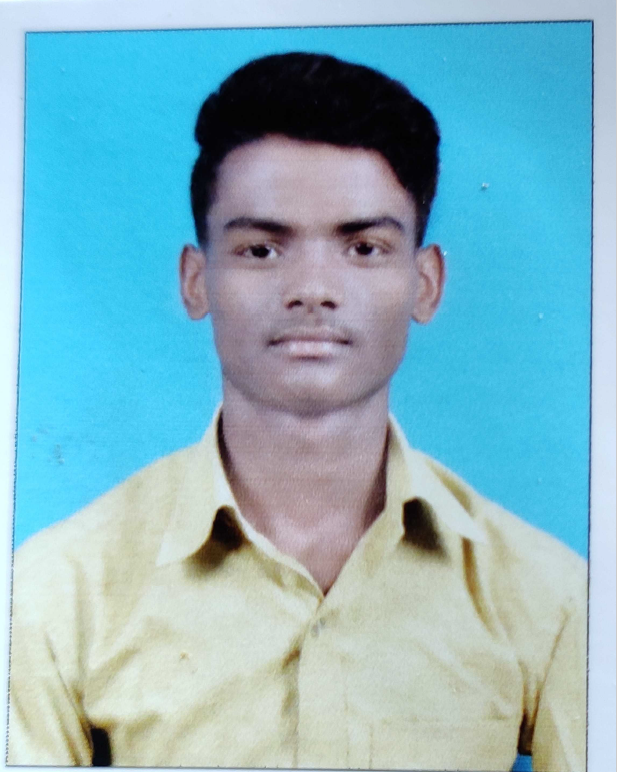

Anupam Lal
Gmail| 8858099589| Azamgarh UP

EDUCATION
- Btech in Computer Science, NITK Surathkal May 2023 CGPA: 6.83/10
- High school and Intermediate, Cross belly In. School AZM UP CGPA:9.8/10 , Per: 92.2
EXPERIENCE
SC/ST Cell, Soft. Developer
- Designed and developed a web portal for the SC/ST cell of NITK.
- The front end is created with the help of HTML, CSS, and JavaScript.
- The Portal Website is responsive on all kinds of devices.
- Worked closely with the Liaison officer on initiating diffrent schemes for the upliftment of students.
PROJECTS
Auto Sales and services App (Dart, Flutter, Firebase database, Android studio)
- Designed and developed Flutter mobile app for purchasing auto parts online.
- Implemented login, signup, add-to-cart, etc., features.
- Used Firebase as the backend for User management.
Mess Management system (HTML, CSS, JavaScript, Php, MySQL)
- Developed a mess management system to effectively manage the food of mess, using HTML, CSS, and javascript
as frontend and PHP as backend.
- Users give their responses in the portal for the day's meal after seeing the menu. Total response is collected
before the preparation of the meal from the portal.
- Implemented signup and login features in the portal.
ACHIEVEMENTS/EXTRA-CURRICULUM
- Solved 400+ coding problems on CodeChef, LeetCode, InterviewBit, and HackerRank.
- JEE Mains and Advanced Qualifed (CRL Rank: 14060)
- NITK Engineer2k22 tech fest Production Head and Gaming coordinator.
- School Topper in class 11th and 12th.
- Member of NITK Power-lifting gym team.